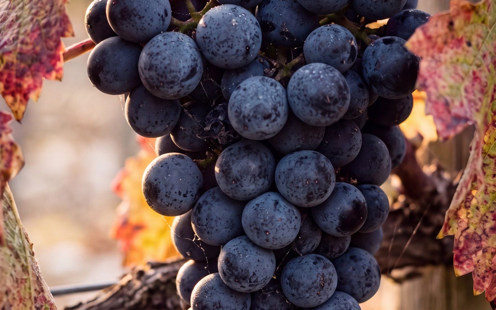

Merlot ou cabernet-sauvignon : quelle différence dans le verre ?
Sur une étiquette de Bordeaux, on lit rarement le nom des cépages. Ce sont pourtant eux qui donnent au vin l’essentiel de son caractère. Deux d’entre eux dominent le vignoble bordelais : le merlot et le cabernet-sauvignon. Voici comment les distinguer, simplement.

Le merlot, la rondeur
Le merlot mûrit tôt et donne de gros grains à la peau fine. Ses vins sont ronds et souples, avec des tanins doux et des arômes de prune, de cerise noire ou de mûre. Il aime les sols frais d’argile, qui retiennent l’eau. C’est le cépage majoritaire de la rive droite de la Dordogne, à Pomerol et à Saint-Émilion.
Dans le verre, un vin riche en merlot se reconnaît à sa texture : il semble enrober la bouche, sans l’assécher. Il est souvent agréable assez jeune.
Le cabernet-sauvignon, la structure
Le cabernet-sauvignon mûrit plus tard et donne de petits grains à la peau épaisse. Ses vins sont plus colorés et plus tanniques, avec des arômes de cassis et, en vieillissant, des notes de cèdre ou de tabac. Il aime les sols chauds et drainants de graves, ces galets roulés par les rivières qui emmagasinent la chaleur du jour. C’est le cépage roi de la rive gauche, dans le Médoc.
Dans le verre, un vin riche en cabernet se reconnaît à sa tenue : les tanins sont plus présents et la finale plus droite. Il gagne souvent à attendre quelques années avant d’être prêt à boire.

Pourquoi les bordeaux sont-ils des assemblages ?
À Bordeaux, on assemble les cépages comme un cuisinier assemble ses ingrédients. Le merlot apporte la chair et la souplesse, le cabernet-sauvignon la structure et la longévité. Le cabernet franc ajoute de la fraîcheur et du parfum, le petit verdot de la couleur et des épices.
L’assemblage permet aussi de composer avec le climat. Les cépages ne mûrissent pas au même moment : une année difficile pour l’un peut être réussie pour l’autre. Chaque château a sa recette, qui dépend de son sol et de son style. C’est pourquoi deux vins d’une même appellation peuvent être très différents.
Trois châteaux voisins, trois recettes
Les trois châteaux de la famille Miailhe montrent bien ces différences. Ils sont pourtant voisins, à Saint-Seurin-de-Cadourne, dans l’appellation Haut-Médoc :
- Château Coufran : 85 % de merlot, une exception sur la rive gauche qui lui vaut le surnom de « Pomerol du Médoc ». Un vin rond et généreux.
- Château Verdignan : le cabernet-sauvignon domine le vignoble, à 65 %, sur des graves face à l’estuaire. Un vin structuré et élégant, fait pour la garde.
- Château Soudars : environ moitié merlot, moitié cabernet-sauvignon, sur un sol d’argile et de calcaire. Un vin fruité et souple.
Le même terroir du Haut-Médoc, trois façons de l’exprimer.
Un petit exercice pour les reconnaître
La meilleure façon de comprendre est de goûter côte à côte un vin dominé par le merlot et un vin dominé par le cabernet-sauvignon. Concentrez-vous sur la texture plutôt que sur les arômes :
- Le premier semble-t-il rond et doux, le second plus ferme ?
- Après avoir avalé, lequel laisse la bouche la plus sèche ? Ce sont les tanins du cabernet.
- Lequel paraît le plus ouvert aujourd’hui, et lequel donne l’impression d’avoir encore des années devant lui ?
Pas besoin de vocabulaire technique : « rond », « ferme », « doux », « sec » suffisent pour décrire ce que vous ressentez.
Questions fréquentes
Le merlot est-il moins bon que le cabernet-sauvignon ?
Non. Ce sont deux styles différents. Le merlot donne des vins plus souples et accessibles jeunes, le cabernet-sauvignon des vins plus structurés qui demandent du temps. Beaucoup de grands bordeaux associent les deux.
Quel cépage pour un vin agréable jeune ?
Plutôt un vin à dominante de merlot, plus souple dans sa jeunesse.
Pourquoi le nom du cépage n’est-il pas sur l’étiquette ?
À Bordeaux, comme dans la plupart des appellations françaises, l’étiquette met en avant le lieu, c’est-à-dire l’appellation, plutôt que le cépage : c’est le terroir et l’assemblage qui font l’identité du vin. Beaucoup de producteurs indiquent toutefois l’assemblage sur la contre-étiquette ou sur leur site.
L’abus d’alcool est dangereux pour la santé, à consommer avec modération.